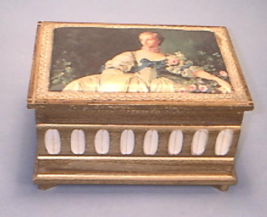

Laura's Tune. Large hand carved wooden box with padded top. It opens to show a mirror and shelf for jewelry besides the compartment in the bottom for jewelry. It is an old Buxton Box with a movement made by Toyo
$150.00

Return to Main page.
Look at more glassware.
Return to old things.
Some pictures in our collection
Phonograph records. LP and 78 RPM
Email Ralph for more information